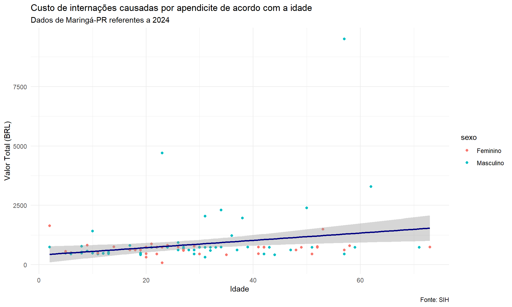
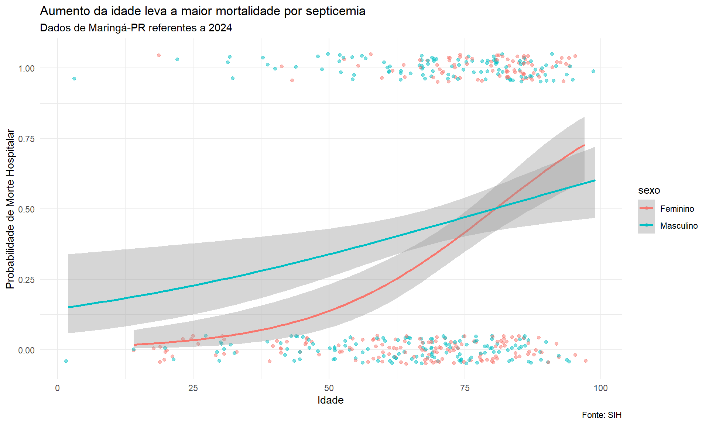

5 Regressão Linear, Logística e Multinomial
Neste capítulo, exploraremos três técnicas estatísticas fundamentais em pesquisa em saúde: a regressão linear, a regressão logística e a regressão multinomial. Cada técnica é adequada para diferentes tipos de variáveis resposta.
5.1 Introdução à Regressão
A análise de regressão é uma ferramenta estatística fundamental que permite:
- Inferência e causalidade: Avaliar precisamente como uma variável impacta outra
- Predição: Predizer o comportamento de uma variável a partir de outras
Trabalharemos com dados reais de internações hospitalares em Maringá-PR (2024) para ilustrar como essas técnicas podem ser aplicadas em contextos práticos da área da saúde.
5.2 Regressão Linear
5.2.1 O que é uma Regressão Linear?
A regressão linear é utilizada quando queremos modelar a relação entre uma variável dependente contínua (como custo de internação, pressão arterial, peso) e uma ou mais variáveis independentes (também chamadas de preditoras).
Visualmente, a regressão linear é representada por uma linha que cruza os pontos de duas ou mais variáveis no gráfico de dispersão. Essa linha é definida por dois componentes principais:
- Intercepto (β₀): Ponto onde a variável X cruza Y no eixo vertical. Representa o valor de Y quando X for 0.
- Inclinação ou slope (β₁): Inclinação da reta. Indica quanto Y varia para cada aumento de uma unidade em X.
A qualidade do ajuste da reta é medida pelo R² (coeficiente de determinação), que varia de 0 a 1. Quanto mais próximo de 1, melhor a reta relaciona as duas variáveis.
5.2.2 Equação da Regressão Linear
A forma matemática da regressão linear simples é:
\[Y = \beta_0 + \beta_1X\]
Onde:
- \(Y\) = variável dependente (ex: valor total da internação)
- \(\beta_0\) = intercepto (valor de Y quando X = 0)
- \(\beta_1\) = coeficiente que indica a variação em Y para cada aumento da unidade de X
- \(X\) = variável independente (ex: idade)
5.2.3 Exemplo Prático com R
Vamos trabalhar com dados de internações por apendicite em Maringá-PR para entender como a idade influencia o custo total das internações.
# Carregar banco de dados
dados <- read_excel("data/dados_internacoes_maringa_2024.xlsx")5.2.3.1 Preparação dos Dados
Primeiro, vamos filtrar e limpar os dados, focando em internações por apendicite (CID K35):
# Identificar doenças mais frequentes
df <- table(dados$DIAG_PRINC)
df <- data.frame(df)
# Filtrando para apendicite (K35)
dados_limpos <- dados |>
clean_names() |>
filter(str_starts(diag_princ, "K35")) |>
filter(cod_idade == "Anos") |>
select(sexo, val_tot, raca_cor, idade, morte, dias_perm) |>
mutate(raca_cor = case_when(
raca_cor == '01' ~ "Branca",
raca_cor == "02" ~ "Preta",
raca_cor == "03" ~ "Parda",
raca_cor == "04" ~ "Amarela",
raca_cor == "05" ~ "Indígena"
)) |>
mutate(across(c(val_tot, idade, dias_perm), as.numeric)) |>
mutate(across(c(sexo, raca_cor, morte), as.factor))5.2.3.2 Visualizando a Relação entre Idade e Custo
ggplot(dados_limpos, aes(x = idade, y = val_tot, colour = sexo)) +
geom_point() +
geom_smooth(method = "lm", colour = "navy") +
labs(x = "Idade", y = "Valor Total (BRL)",
title = "Custo de internações causadas por apendicite de acordo com a idade",
subtitle = "Dados de Maringá-PR referentes a 2024",
caption = "Fonte: SIH") +
theme_minimal()
5.2.3.3 Visualização com Escala Logarítmica
Quando há outliers (valores extremos), podemos usar escala logarítmica para melhor visualização:
ggplot(dados_limpos, aes(x = idade, y = val_tot, colour = sexo)) +
geom_point() +
geom_smooth(method = "lm", colour = "navy") +
labs(x = "Idade", y = "Valor Total (BRL) - Escala Log",
title = "Relação entre Idade e o Valor Total da Internação") +
scale_y_log10() +
theme_minimal()
5.2.4 Etapas para Ajuste de um Modelo de Regressão
A construção de um modelo de regressão segue etapas progressivas:
- Modelo somente com intercepto: Útil para verificar o basal de Y
- Modelo univariado: Uma única variável preditora
- Modelo multivariado: Ajustado por várias variáveis preditoras
Importante: Maior número de variáveis aumenta a complexidade e a dificuldade de interpretação do modelo.
5.2.4.1 1. Modelo Somente com Intercepto
MODEL INFO:
Observations: 115
Dependent Variable: val_tot
Type: OLS linear regression
Standard errors:OLS
--------------------------------------------------
Est. S.E. t val. p
----------------- -------- ------- -------- ------
(Intercept) 839.73 92.34 9.09 0.00
--------------------------------------------------O intercepto representa o valor médio basal de Y (custo total) sem considerar nenhuma variável preditora.
5.2.4.2 2. Modelo Univariado com Idade
MODEL INFO:
Observations: 115
Dependent Variable: val_tot
Type: OLS linear regression
MODEL FIT:
F(1,113) = 7.45, p = 0.01
R² = 0.06
Adj. R² = 0.05
Standard errors:OLS
---------------------------------------------------
Est. S.E. t val. p
----------------- -------- -------- -------- ------
(Intercept) 408.80 181.67 2.25 0.03
idade 15.48 5.67 2.73 0.01
---------------------------------------------------Interpretação do modelo:
- O intercepto (β₀) é 408,80
- O coeficiente da idade (β₁) é 15,48
- Para um paciente de 50 anos: Valor total = 408,80 + (15,48 × 50) = R$ 1.182,00
- O R² = 0,06 indica que a idade explica apenas 6% da variação no custo
5.2.4.3 3. Modelo Ajustado por Sexo
Variáveis categóricas são tratadas de forma especial. O R cria variáveis dummy, usando uma categoria como referência (baseline).
MODEL INFO:
Observations: 115
Dependent Variable: val_tot
Type: OLS linear regression
MODEL FIT:
F(2,112) = 5.31, p = 0.01
R² = 0.09
Adj. R² = 0.07
Standard errors:OLS
-----------------------------------------------------
Est. S.E. t val. p
------------------- -------- -------- -------- ------
(Intercept) 203.53 215.07 0.95 0.35
idade 16.13 5.63 2.86 0.01
sexoMasculino 316.77 181.51 1.75 0.08
-----------------------------------------------------Por padrão, o R usa ordem alfabética para definir a categoria de referência. Podemos alterar isso:
# Definindo Masculino como referência
dados_limpos$sexo <- factor(dados_limpos$sexo, levels = c("Masculino", "Feminino"))
modelo_idade_sexo <- lm(val_tot ~ idade + sexo, dados_limpos)
summ(modelo_idade_sexo)MODEL INFO:
Observations: 115
Dependent Variable: val_tot
Type: OLS linear regression
MODEL FIT:
F(2,112) = 5.31, p = 0.01
R² = 0.09
Adj. R² = 0.07
Standard errors:OLS
-----------------------------------------------------
Est. S.E. t val. p
------------------ --------- -------- -------- ------
(Intercept) 520.30 191.05 2.72 0.01
idade 16.13 5.63 2.86 0.01
sexoFeminino -316.77 181.51 -1.75 0.08
-----------------------------------------------------5.2.5 Diagnóstico do Modelo
5.2.5.1 Multicolinearidade (VIF)
Quando incluímos múltiplas variáveis, precisamos verificar se há multicolinearidade (correlação forte entre preditores).
VIF (Variance Inflation Factor): se > 5, há problema de multicolinearidade.
vif(modelo_idade_sexo) idade sexo
1.004327 1.004327 5.2.5.2 Teste de Heterocedasticidade
A regressão linear assume que os resíduos têm variância constante (homocedasticidade).
lmtest::bptest(modelo_idade_sexo)
studentized Breusch-Pagan test
data: modelo_idade_sexo
BP = 5.5554, df = 2, p-value = 0.06218Se p < 0,05, há evidência de heterocedasticidade, o que pode violar as suposições do modelo.
5.2.6 Modelo Multivariado Completo
modelo_final <- lm(val_tot ~ idade + sexo + raca_cor + dias_perm, dados_limpos)
# Verificar VIF
vif(modelo_final) GVIF Df GVIF^(1/(2*Df))
idade 1.039816 1 1.019713
sexo 1.068702 1 1.033781
raca_cor 1.079688 3 1.012861
dias_perm 1.083600 1 1.040961# Visualizar resultados
summ(modelo_final)MODEL INFO:
Observations: 115
Dependent Variable: val_tot
Type: OLS linear regression
MODEL FIT:
F(6,108) = 5.29, p = 0.00
R² = 0.23
Adj. R² = 0.18
Standard errors:OLS
-------------------------------------------------------
Est. S.E. t val. p
-------------------- --------- -------- -------- ------
(Intercept) -352.98 467.83 -0.75 0.45
idade 20.06 5.37 3.74 0.00
sexoFeminino -246.24 175.39 -1.40 0.16
raca_corBranca 122.79 420.47 0.29 0.77
raca_corParda 364.11 440.33 0.83 0.41
raca_corPreta 74.14 755.77 0.10 0.92
dias_perm 196.26 45.77 4.29 0.00
-------------------------------------------------------5.2.7 Apresentação de Resultados com Tabela
modelo_final |>
tbl_regression(label = list(
idade ~ "Idade (anos)",
sexo ~ "Sexo",
raca_cor ~ "Raça/Cor",
dias_perm ~ "Dias de hospitalização"
)) |>
bold_p(t = 0.05) |>
bold_labels() |>
italicize_levels() |>
modify_header(label = "**Variáveis preditoras**") |>
modify_footnote(label = "Tabela 1: Efeito das variáveis preditoras sobre o custo de internação") |>
modify_header(estimate = "**Coeficiente**") |>
as_flex_table()Variáveis preditoras1 |
Coeficiente |
95% CI |
p-value |
|---|---|---|---|
Idade (anos) |
20 |
9.4, 31 |
<0.001 |
Sexo |
|||
Masculino |
— |
— |
|
Feminino |
-246 |
-594, 101 |
0.2 |
Raça/Cor |
|||
Amarela |
— |
— |
|
Branca |
123 |
-711, 956 |
0.8 |
Parda |
364 |
-509, 1,237 |
0.4 |
Preta |
74 |
-1,424, 1,572 |
>0.9 |
Dias de hospitalização |
196 |
106, 287 |
<0.001 |
1Tabela 1: Efeito das variáveis preditoras sobre o custo de internação | |||
Abbreviation: CI = Confidence Interval | |||
5.2.8 Predição com o Modelo
Podemos usar a função predict() para estimar valores:
# Homem de 45 anos
predict(modelo_idade_sexo, newdata = data.frame(
sexo = "Masculino", idade = 45)) 1
1246.009 # Mulher de 45 anos
predict(modelo_idade_sexo, newdata = data.frame(
sexo = "Feminino", idade = 45)) 1
929.244 5.3 Regressão Logística
5.3.1 O que é uma Regressão Logística?
A regressão logística é utilizada quando a variável dependente é categórica binária (sim/não, vivo/morto, doente/saudável). Diferentemente da regressão linear, que prediz valores contínuos, a regressão logística prediz a probabilidade de um determinado evento acontecer.
5.3.2 Equação da Regressão Logística
A forma matemática é:
\[\log\left(\frac{p}{1-p}\right) = \beta_0 + \beta_1X_1\]
Onde:
- \(p\) = probabilidade do evento ocorrer
- \(\frac{p}{1-p}\) = odds (razão de chances) do evento
- \(\log\left(\frac{p}{1-p}\right)\) = log-odds ou logit
- \(\beta_0\) = intercepto (log-odds quando todas as variáveis preditoras são 0)
- \(\beta_1\) = coeficiente que quantifica a variação na probabilidade
5.3.3 Exemplo Prático: Mortalidade por Septicemia
Vamos analisar fatores associados à morte hospitalar em pacientes com septicemia.
5.3.3.1 Preparação dos Dados
# Identificar diagnósticos com mortes
df_morte <- table(dados$DIAG_PRINC, dados$MORTE)
df_morte <- data.frame(df_morte)
# Filtrar para septicemia (CID A419)
dados_limpos_log <- dados |>
clean_names() |>
filter(str_starts(diag_princ, "A419")) |>
filter(cod_idade == "Anos") |>
select(sexo, val_tot, raca_cor, idade, morte, dias_perm) |>
mutate(raca_cor = case_when(
raca_cor == '01' ~ "Branca",
raca_cor == "02" ~ "Preta",
raca_cor == "03" ~ "Parda",
raca_cor == "04" ~ "Amarela",
raca_cor == "05" ~ "Indígena"
)) |>
mutate(across(c(val_tot, idade, dias_perm), as.numeric)) |>
mutate(across(c(sexo, raca_cor, morte), as.factor))
# Criar variável binária para plotagem
dados_limpos_log$morte_bin <- ifelse(dados_limpos_log$morte == "Sim", 1, 0)5.3.3.2 Visualização da Relação Logística
ggplot(dados_limpos_log, aes(x = idade, y = morte_bin, colour = sexo)) +
geom_point() +
geom_smooth(method = "glm", method.args = list(family = "binomial"), colour = "navy") +
labs(x = "Idade", y = "Probabilidade de Morte Hospitalar",
title = "Aumento da idade leva a maior mortalidade por septicemia",
subtitle = "Dados de Maringá-PR referentes a 2024",
caption = "Fonte: SIH") +
theme_minimal()
5.3.3.3 Visualização Separada por Sexo
ggplot(dados_limpos_log, aes(x = idade, y = morte_bin, colour = sexo)) +
geom_point() +
geom_smooth(method = "glm", method.args = list(family = "binomial"), se = TRUE) +
labs(x = "Idade", y = "Probabilidade de Morte Hospitalar",
title = "Aumento da idade leva a maior mortalidade por septicemia",
subtitle = "Dados de Maringá-PR referentes a 2024",
caption = "Fonte: SIH") +
theme_minimal()
5.3.3.4 Visualização com Jitter
Para melhor visualização da densidade de pontos:
ggplot(dados_limpos_log, aes(x = idade, y = morte_bin, color = sexo)) +
geom_jitter(height = 0.05, alpha = 0.5) +
geom_smooth(method = "glm",
method.args = list(family = "binomial"),
se = TRUE) +
labs(x = "Idade",
y = "Probabilidade de Morte Hospitalar",
title = "Aumento da idade leva a maior mortalidade por septicemia",
subtitle = "Dados de Maringá-PR referentes a 2024",
caption = "Fonte: SIH") +
theme_minimal()
5.3.4 Construindo Modelos Logísticos
5.3.4.1 Preparação da Variável Dependente
Importante: A variável dependente deve ser um fator. O R usa ordem alfabética para definir qual categoria é o “evento”. Podemos alterar isso:
5.3.4.2 1. Modelo com Intercepto Apenas
MODEL INFO:
Observations: 467
Dependent Variable: morte
Type: Generalized linear model
Family: binomial
Link function: logit
MODEL FIT:
χ²(0) = -0.00, p = NA
Pseudo-R² (Cragg-Uhler) = 0.00
Pseudo-R² (McFadden) = 0.00
AIC = 632.33, BIC = 636.48
Standard errors:MLE
------------------------------------------------
Est. S.E. z val. p
----------------- ------- ------ -------- ------
(Intercept) -0.39 0.09 -4.09 0.00
------------------------------------------------# Com odds-ratio (exponenciando os coeficientes)
summ(modelo_log, exp = TRUE)MODEL INFO:
Observations: 467
Dependent Variable: morte
Type: Generalized linear model
Family: binomial
Link function: logit
MODEL FIT:
χ²(0) = -0.00, p = NA
Pseudo-R² (Cragg-Uhler) = 0.00
Pseudo-R² (McFadden) = 0.00
AIC = 632.33, BIC = 636.48
Standard errors:MLE
------------------------------------------------------------
exp(Est.) 2.5% 97.5% z val. p
----------------- ----------- ------ ------- -------- ------
(Intercept) 0.68 0.57 0.82 -4.09 0.00
------------------------------------------------------------5.3.4.3 2. Modelo Univariado com Idade
modelo_log_idade <- glm(morte ~ idade, family = "binomial", dados_limpos_log)
# Coeficientes brutos (log-odds)
summ(modelo_log_idade)MODEL INFO:
Observations: 467
Dependent Variable: morte
Type: Generalized linear model
Family: binomial
Link function: logit
MODEL FIT:
χ²(1) = 38.52, p = 0.00
Pseudo-R² (Cragg-Uhler) = 0.11
Pseudo-R² (McFadden) = 0.06
AIC = 595.81, BIC = 604.10
Standard errors:MLE
------------------------------------------------
Est. S.E. z val. p
----------------- ------- ------ -------- ------
(Intercept) -2.87 0.46 -6.25 0.00
idade 0.04 0.01 5.67 0.00
------------------------------------------------# Odds-ratio
summ(modelo_log_idade, exp = TRUE)MODEL INFO:
Observations: 467
Dependent Variable: morte
Type: Generalized linear model
Family: binomial
Link function: logit
MODEL FIT:
χ²(1) = 38.52, p = 0.00
Pseudo-R² (Cragg-Uhler) = 0.11
Pseudo-R² (McFadden) = 0.06
AIC = 595.81, BIC = 604.10
Standard errors:MLE
------------------------------------------------------------
exp(Est.) 2.5% 97.5% z val. p
----------------- ----------- ------ ------- -------- ------
(Intercept) 0.06 0.02 0.14 -6.25 0.00
idade 1.04 1.02 1.05 5.67 0.00
------------------------------------------------------------5.3.4.4 3. Modelo com Idade e Sexo
modelo_log_idade_sexo <- glm(morte ~ idade + sexo, family = "binomial", dados_limpos_log)
# Verificar multicolinearidade
vif(modelo_log_idade_sexo) idade sexo
1.01195 1.01195 # Visualizar odds-ratio
summ(modelo_log_idade_sexo, exp = TRUE)MODEL INFO:
Observations: 467
Dependent Variable: morte
Type: Generalized linear model
Family: binomial
Link function: logit
MODEL FIT:
χ²(2) = 41.29, p = 0.00
Pseudo-R² (Cragg-Uhler) = 0.11
Pseudo-R² (McFadden) = 0.07
AIC = 595.04, BIC = 607.48
Standard errors:MLE
--------------------------------------------------------------
exp(Est.) 2.5% 97.5% z val. p
------------------- ----------- ------ ------- -------- ------
(Intercept) 0.04 0.02 0.12 -6.37 0.00
idade 1.04 1.02 1.05 5.74 0.00
sexoMasculino 1.39 0.94 2.05 1.66 0.10
--------------------------------------------------------------5.3.5 Predição de Probabilidades
# Homem de 45 anos
predict(modelo_log_idade_sexo,
newdata = data.frame(sexo = "Masculino", idade = 45),
type = "response") 1
0.2443032 # Mulher de 45 anos
predict(modelo_log_idade_sexo,
newdata = data.frame(sexo = "Feminino", idade = 45),
type = "response") 1
0.1887685 5.3.6 Apresentação de Resultados
modelo_log_idade_sexo |>
tbl_regression(
label = list(
idade ~ "Idade (anos)",
sexo ~ "Sexo"
),
exponentiate = TRUE
) |>
bold_p(t = 0.05) |>
bold_labels() |>
italicize_levels() |>
modify_header(label = "**Variáveis preditoras**") |>
modify_footnote(label = "Tabela 2: Odds-ratio de mortalidade por septicemia") |>
modify_header(estimate = "**OR**") |>
as_flex_table()Variáveis preditoras1 |
OR |
95% CI |
p-value |
|---|---|---|---|
Idade (anos) |
1.04 |
1.02, 1.05 |
<0.001 |
Sexo |
|||
Feminino |
— |
— |
|
Masculino |
1.39 |
0.94, 2.05 |
0.10 |
1Tabela 2: Odds-ratio de mortalidade por septicemia | |||
Abbreviations: CI = Confidence Interval, OR = Odds Ratio | |||
5.3.7 Modelo Multivariado Completo
modelo_log_final <- glm(morte ~ idade + sexo + val_tot + raca_cor + dias_perm,
family = "binomial",
dados_limpos_log)
# Verificar VIF
vif(modelo_log_final) GVIF Df GVIF^(1/(2*Df))
idade 1.050219 1 1.024802
sexo 1.038572 1 1.019104
val_tot 3.430582 1 1.852183
raca_cor 1.044049 3 1.007210
dias_perm 3.349259 1 1.830098# Visualizar com odds-ratio
summ(modelo_log_final, exp = TRUE)MODEL INFO:
Observations: 467
Dependent Variable: morte
Type: Generalized linear model
Family: binomial
Link function: logit
MODEL FIT:
χ²(7) = 94.53, p = 0.00
Pseudo-R² (Cragg-Uhler) = 0.25
Pseudo-R² (McFadden) = 0.15
AIC = 551.80, BIC = 584.97
Standard errors:MLE
---------------------------------------------------------------
exp(Est.) 2.5% 97.5% z val. p
-------------------- ----------- ------ ------- -------- ------
(Intercept) 0.06 0.01 0.31 -3.30 0.00
idade 1.04 1.03 1.05 5.74 0.00
sexoMasculino 1.20 0.79 1.83 0.87 0.38
val_tot 1.00 1.00 1.00 5.29 0.00
raca_corBranca 1.30 0.31 5.43 0.36 0.72
raca_corParda 0.85 0.19 3.80 -0.21 0.84
raca_corPreta 3.46 0.66 18.24 1.46 0.14
dias_perm 0.86 0.82 0.91 -5.92 0.00
---------------------------------------------------------------5.3.7.1 Ajustando Categoria de Referência
# Verificar distribuição
table(dados_limpos_log$raca_cor)
Amarela Branca Parda Preta
11 341 89 26 # Mudar "Branca" para categoria de referência (mais frequente)
dados_limpos_log$raca_cor <- factor(dados_limpos_log$raca_cor,
levels = c("Branca", "Amarela", "Parda", "Preta"))
# Rodar modelo novamente
modelo_log_final <- glm(morte ~ idade + sexo + val_tot + raca_cor + dias_perm,
family = "binomial",
dados_limpos_log)
summ(modelo_log_final, exp = TRUE)MODEL INFO:
Observations: 467
Dependent Variable: morte
Type: Generalized linear model
Family: binomial
Link function: logit
MODEL FIT:
χ²(7) = 94.53, p = 0.00
Pseudo-R² (Cragg-Uhler) = 0.25
Pseudo-R² (McFadden) = 0.15
AIC = 551.80, BIC = 584.97
Standard errors:MLE
----------------------------------------------------------------
exp(Est.) 2.5% 97.5% z val. p
--------------------- ----------- ------ ------- -------- ------
(Intercept) 0.07 0.03 0.21 -4.88 0.00
idade 1.04 1.03 1.05 5.74 0.00
sexoMasculino 1.20 0.79 1.83 0.87 0.38
val_tot 1.00 1.00 1.00 5.29 0.00
raca_corAmarela 0.77 0.18 3.20 -0.36 0.72
raca_corParda 0.66 0.38 1.14 -1.51 0.13
raca_corPreta 2.66 1.06 6.69 2.08 0.04
dias_perm 0.86 0.82 0.91 -5.92 0.00
----------------------------------------------------------------5.3.8 Tabela Final do Modelo Multivariado
modelo_log_final |>
tbl_regression(
label = list(
idade ~ "Idade (anos)",
sexo ~ "Sexo",
val_tot ~ "Valor total (BRL)",
raca_cor ~ "Raça/Cor",
dias_perm ~ "Dias de hospitalização"
),
exponentiate = TRUE
) |>
bold_p(t = 0.05) |>
bold_labels() |>
italicize_levels() |>
modify_header(label = "**Variáveis preditoras**") |>
modify_footnote(label = "Tabela 3: Odds-ratio de mortalidade por septicemia - modelo ajustado") |>
modify_header(estimate = "**OR**") |>
as_flex_table()Variáveis preditoras1 |
OR |
95% CI |
p-value |
|---|---|---|---|
Idade (anos) |
1.04 |
1.03, 1.05 |
<0.001 |
Sexo |
|||
Feminino |
— |
— |
|
Masculino |
1.20 |
0.79, 1.83 |
0.4 |
Valor total (BRL) |
1.00 |
1.00, 1.00 |
<0.001 |
Raça/Cor |
|||
Branca |
— |
— |
|
Amarela |
0.77 |
0.16, 3.01 |
0.7 |
Parda |
0.66 |
0.37, 1.13 |
0.13 |
Preta |
2.66 |
1.07, 6.87 |
0.038 |
Dias de hospitalização |
0.86 |
0.82, 0.90 |
<0.001 |
1Tabela 3: Odds-ratio de mortalidade por septicemia - modelo ajustado | |||
Abbreviations: CI = Confidence Interval, OR = Odds Ratio | |||
5.4 Interpretando Odds Ratio
O Odds Ratio (OR) ou Razão de Chances é a métrica mais importante em regressão logística. É obtido exponenciando os coeficientes do modelo (exp = TRUE).
5.4.1 Como Interpretar
- OR = 1: Não há associação entre a variável e o desfecho
-
OR > 1: As chances do evento são maiores no grupo exposto
- Exemplo: OR = 1,04 → 4% mais chances
- Exemplo: OR = 2,66 → 166% mais chances (ou 2,66 vezes mais chances)
-
OR < 1: As chances do evento são menores no grupo exposto
- Exemplo: OR = 0,86 → 14% menos chances (1 - 0,86 = 0,14)
- Exemplo: OR = 0,66 → 34% menos chances
5.4.2 Exemplos Práticos de Interpretação
5.4.2.1 1. Idade (OR = 1,04)
- Cada ano a mais de idade aumenta em 4% as chances de óbito
- Para calcular o efeito cumulativo: OR^anos
- Indivíduo de 50 anos: 1,04^50 = 7
- Chances de óbito 7 vezes maiores comparado a um recém-nascido
5.4.2.2 2. Valor Total (OR = 1,00)
- Embora significativo (p < 0,001), o OR = 1,00 indica que cada real a mais no custo não altera as chances de morte
- Valores muito próximos de 1 geralmente indicam efeito pequeno ou nulo
5.4.2.3 3. Raça/Cor Preta (OR = 2,66)
- Comparado a indivíduos brancos (categoria de referência), indivíduos pretos têm:
- 2,66 vezes mais chances de óbito OU
- 166% mais chances de óbito (2,66 - 1 = 1,66 = 166%)
5.4.2.4 4. Dias de Hospitalização (OR = 0,86)
- Cada dia a mais de hospitalização reduz em 14% as chances de óbito (1 - 0,86 = 0,14)
- Para múltiplos dias: 0,86^dias
- 4 dias de hospitalização: 0,86^4 = 0,54
- 46% menos chances de óbito (1 - 0,54 = 0,46)
Odds ratio < 1 indica efeito protetor (reduz chances do evento), enquanto > 1 indica fator de risco (aumenta chances do evento).
Para calcular a redução percentual quando OR < 1: (1 - OR) × 100
5.4.3 Cálculo Manual da Probabilidade
Embora o R faça isso automaticamente com predict(), entender o cálculo manual ajuda a compreender o modelo:
\[\log\left(\frac{p}{1-p}\right) = -2,87 + (0,04 \times 50)\]
\[\log\left(\frac{p}{1-p}\right) = -0,87\]
\[\frac{p}{1-p} = \exp(-0,87) = 0,42\]
Resolvendo para p:
\[p = \frac{0,42}{1 + 0,42} = 0,29\]
Resultado: Um paciente de 50 anos tem 29% de probabilidade de óbito.
5.5 Regressão Multinomial
5.5.1 O que é Regressão Multinomial?
A regressão multinomial (também chamada de regressão logística multinomial ou politômica) é uma extensão da regressão logística binária para variáveis resposta categóricas com três ou mais níveis não ordenados.
5.5.1.1 Quando Usar?
Use regressão multinomial quando:
-
Variável resposta: Categórica com 3+ níveis não ordenados
- Exemplos: tipo de tratamento escolhido (cirurgia, medicamento, fisioterapia)
- Categoria de diagnóstico (doença A, doença B, doença C)
- Análise de sentimento (positivo, neutro, negativo)
- Variáveis preditoras: Numéricas e/ou categóricas
- Objetivo: Modelar probabilidade de cada categoria em função das preditoras
- Multinomial: Categorias não têm ordem natural (ex: tipo sanguíneo A, B, AB, O)
- Ordinal: Categorias têm ordem natural (ex: leve, moderado, grave)
Para variáveis ordinais, use regressão logística ordinal (não coberto neste livro).
5.5.2 Conexão com o Capítulo 7
A regressão multinomial é particularmente útil para análise de sentimento, onde classificamos texto em categorias como positivo, neutro, negativo. Consulte o Capítulo 7 - Análise de Dados Textuais para exemplos completos de análise de sentimento seguida de modelagem multinomial.
5.5.3 Estrutura do Modelo
A regressão multinomial estima coeficientes para cada categoria em relação a uma categoria de referência.
Exemplo com 3 categorias (positivo, neutro, negativo):
Se “neutro” for a referência:
- Modelo 1: Log-odds de positivo vs. neutro
- Modelo 2: Log-odds de negativo vs. neutro
Equações:
\[ \log\left(\frac{P(\text{positivo})}{P(\text{neutro})}\right) = \beta_{0,pos} + \beta_{1,pos}X_1 + \beta_{2,pos}X_2 \]
\[ \log\left(\frac{P(\text{negativo})}{P(\text{neutro})}\right) = \beta_{0,neg} + \beta_{1,neg}X_1 + \beta_{2,neg}X_2 \]
5.5.4 Exemplo Prático: Modelando Tipo de Alta Hospitalar
Vamos usar os dados de internações para modelar o tipo de alta (simulado para demonstração, pois o dataset original tem apenas dados binários de morte).
library(nnet) # Para regressão multinomial
# Criar variável categórica de tipo de alta (simulada para demonstração)
set.seed(123)
dados_multi <- dados_limpos %>%
filter(!is.na(idade), !is.na(sexo)) %>%
mutate(tipo_alta = sample(c("Alta melhorada", "Alta a pedido", "Transferência"),
size = n(),
replace = TRUE,
prob = c(0.70, 0.15, 0.15))) %>%
mutate(tipo_alta = as.factor(tipo_alta))
# Definir categoria de referência ("Alta melhorada" é a mais comum)
dados_multi$tipo_alta <- relevel(dados_multi$tipo_alta, ref = "Alta melhorada")
# Visualizar distribuição
table(dados_multi$tipo_alta)
prop.table(table(dados_multi$tipo_alta))5.5.5 Ajustando o Modelo Multinomial
# Ajustar modelo multinomial
modelo_multi <- multinom(tipo_alta ~ idade + sexo + val_tot,
data = dados_multi)
# Resumo do modelo
summary(modelo_multi)
# Odds ratios e tabela formatada
tbl_regression(modelo_multi, exponentiate = TRUE)5.5.6 Interpretação dos Coeficientes
Os coeficientes representam o log-odds de cada categoria comparado à categoria de referência (“Alta melhorada”).
Exemplo de interpretação:
Se o OR para idade no modelo “Transferência” vs. “Alta melhorada” é 1,02 (IC 95%: 1,01-1,03; p < 0,001):
- Para cada ano adicional de idade, as chances de transferência (vs. alta melhorada) aumentam 2%
- É estatisticamente significativo (p < 0,001)
5.5.7 Verificando Multicolinearidade
# Calcular VIF
vif(modelo_multi)5.5.8 Predições de Probabilidade
# Criar grid para predições
grid_pred <- expand.grid(
idade = seq(20, 80, by = 10),
sexo = c("Feminino", "Masculino"),
val_tot = median(dados_multi$val_tot, na.rm = TRUE)
)
# Predizer probabilidades
probs <- predict(modelo_multi, newdata = grid_pred, type = "probs")
# Combinar e visualizar
grid_pred <- grid_pred %>%
bind_cols(as.data.frame(probs)) %>%
pivot_longer(cols = c(`Alta melhorada`, `Alta a pedido`, `Transferência`),
names_to = "tipo_alta",
values_to = "probabilidade")
# Plotar
ggplot(grid_pred, aes(x = idade, y = probabilidade, color = tipo_alta)) +
geom_line(size = 1.2) +
facet_wrap(~ sexo) +
labs(title = "Probabilidade Predita de Tipo de Alta",
x = "Idade",
y = "Probabilidade",
color = "Tipo de Alta") +
theme_minimal() +
theme(legend.position = "bottom")5.5.9 Comparação: Logística Binária vs. Multinomial
| Aspecto | Regressão Logística Binária | Regressão Multinomial |
|---|---|---|
| Variável resposta | 2 categorias (sim/não) | 3+ categorias não ordenadas |
| Modelos estimados | 1 modelo | K-1 modelos (K = nº categorias) |
| Interpretação | Odds ratio direto | Odds ratio vs. categoria referência |
| Categoria referência | Automática | Deve ser definida |
| Complexidade | Simples | Mais complexa |
| Exemplo | Morte (sim/não) | Tipo de alta (3 categorias) |
5.5.10 Aplicação em Análise de Sentimento
A regressão multinomial é amplamente usada em análise de sentimento de dados textuais. No Capítulo 7 - Análise de Dados Textuais, você encontrará exemplos completos de:
- Análise de sentimento usando léxicos e LLMs
- Classificação de texto em categorias (positivo, neutro, negativo)
- Modelagem multinomial completa com dados textuais reais
- Interpretação de resultados no contexto de pesquisa qualitativa
Fluxo típico:
Texto bruto → Análise de sentimento → Categorias → Regressão multinomial5.5.11 Limitações e Considerações
-
Tamanho amostral: Requer amostras maiores que regressão logística binária
- Regra prática: Pelo menos 10 eventos por preditor por categoria
- Categoria de referência: Escolha a categoria mais comum ou mais relevante clinicamente
- Interpretação: Mais complexa que regressão logística binária - cada coeficiente é relativo à referência
- Alternativas: Se categorias são ordenadas (leve, moderado, grave), use regressão logística ordinal
5.6 Resumo do Capítulo
Neste capítulo, aprendemos sobre três tipos de regressão:
-
Regressão Linear:
- Usada para desfechos contínuos (custo, peso, pressão)
- Interpreta-se pelos coeficientes β
- Avalia-se a qualidade do ajuste pelo R²
- Diagnósticos importantes: VIF e teste de heterocedasticidade
-
Regressão Logística:
- Usada para desfechos binários (morte, doença, evento)
- Interpreta-se pelos odds ratios (OR)
- OR > 1 = fator de risco; OR < 1 = fator protetor
- Prediz probabilidades de eventos
-
Regressão Multinomial:
- Usada para desfechos categóricos com 3+ níveis não ordenados
- Estima K-1 modelos (K = número de categorias)
- Interpreta-se pelos OR relativos à categoria de referência
- Aplicações: análise de sentimento, escolha de tratamento, classificação de diagnósticos
-
Etapas de Modelagem:
- Modelo com intercepto → Modelo univariado → Modelo multivariado
- Verificar sempre multicolinearidade (VIF)
- Escolher categoria de referência apropriada
-
Apresentação de Resultados:
- Tabelas formatadas com
tbl_regression() - Odds ratios com intervalos de confiança
- Valores p destacados
- Tabelas formatadas com
5.6.1 Exercícios Práticos
Regressão Linear: Construa um modelo de regressão linear com uma doença de sua escolha. Gere gráficos e interprete os coeficientes. Verifique os pressupostos (VIF, heterocedasticidade).
Regressão Logística: Construa um modelo de regressão logística para predizer algum desfecho binário. Calcule e interprete os odds ratios. Compare modelos univariado e multivariado.
Regressão Multinomial: Crie uma variável categórica com 3 categorias (ex: faixa de custo: baixo, médio, alto) e ajuste um modelo multinomial. Interprete os odds ratios e crie visualizações de probabilidades preditas.
Comparação de Modelos: Para um mesmo desfecho, compare modelos com diferentes conjuntos de preditores. Use critérios de ajuste (AIC, BIC) para selecionar o melhor modelo.
Integração com Capítulo 7: Após estudar o Capítulo 7, realize uma análise de sentimento completa e modele os resultados usando regressão multinomial com variáveis demográficas como preditores.